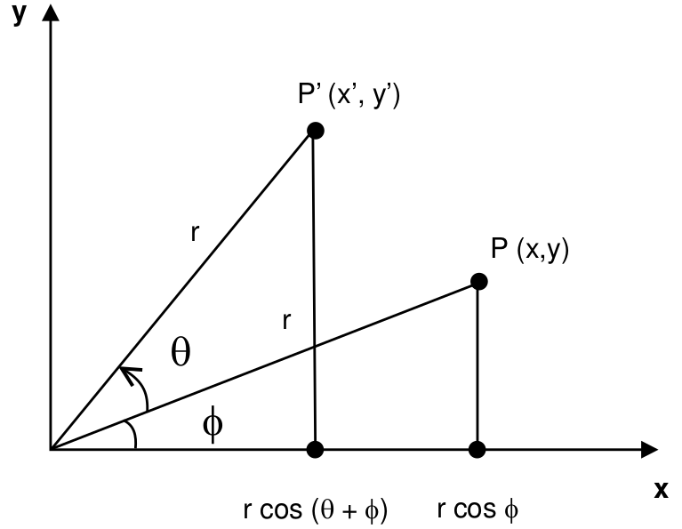
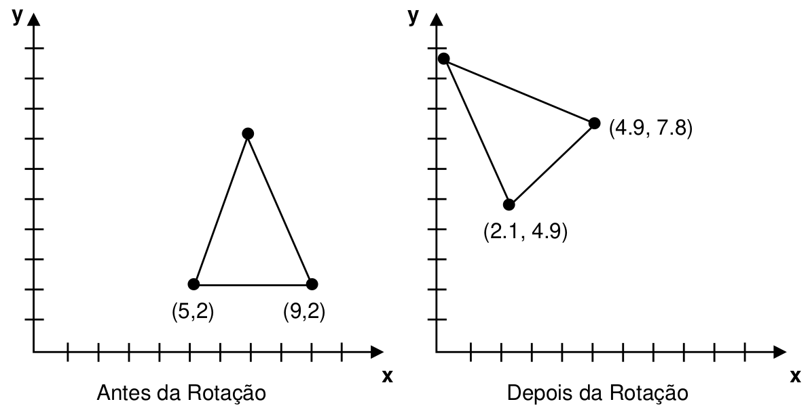

Capítulo 3 Transformacões Geométricas
Nessa seção abordaremos conceitos importantes que detalham processos de transformações geométricas na imagem digitalizada, definiremos a seção proposta, sistema de coordenadas objetos (2D e 3D), representação vetorial e matricial de Imagens digitalizadas, matrizes em computação gráfica, transformações em pontos e objetos; transformações (translação, escala, rotação).
3.1 Definição
As transformações geométricas são operações que podem ser utilizadas sobre uma imagem, visando alterar características como: posição , orientação, forma ou tamanho da imagem apresentada. As operações (transformações geométricas) não alteram a topologia (pixels) da imagem operada, apenas possibilitam a projeção da imagem no espaço determinado.
3.2 Sistema de coordenadas objetos (2D e 3D)
Sistemas de coordenadas nos objetos (2D e 3D) podem ser usadas para modelar objetos(imagens), servindo de referência em termos de dimensões(tamanhos), rotacionamento e posições dos objetos nas operações geométricas, dentro do ambiente de aplicação.
No sistema de coordenadas polares (ao dentro da imagem, figura 3.1), as coordenadas são descritas por raio e ângulo: (r, \(\phi\)). No sistema de coordenadas esférico (à esquerda), as coordenadas são descritas por raio e dois ângulos. Nos sistemas de coordenadas cilíndricos (à direita), as coordenadas são descritas por raio, ângulo e um comprimento. Os dois sistemas de extremidades são 3D. Esse tema é abordado com mais profundidade na matéria de Computação Gráfica (CG), transformações geométricas no plano e no espaço. Fonte: Coordenadas Polares ???.

Figura 3.1: Coordenadas Polares ???.
3.3 Representação Vetorial e Matricial de Imagens digitalizadas
Um vetor é basicamente um segmento de reta orientada (sentido e direção). Para representar um vetor em dimensão 2D, usaremos \(V\), como seta que sai da origem do sistema de coordenadas, para o ponto (x, y), tendo assim a direção um sentido e um comprimento específico.
Fonte: ???.
A fórmula abaixo é aplicada para calcular comprimento do vetor 2D:
\[|V| = {\sqrt{x^2 + y^2}}\]
Exemplo 1: Calcule o comprimento de \(V\) com \(x=2\) e \(y=3\).
Resolução: \[|V| = 22+ 32 = 3.60\]
Se pensamos em \(V\) no espaço 3D, definindo a origem ao ponto \(P(x, y, z)\) seu comprimento seria: \[|V| = {\sqrt{x^2+y^2+z^2}}\]
Exemplo 2: Calcule o comprimento de \(V\) com \(x=2\) , \(y=3\) e \(z=1\).
Resolução: \[|V| = {\sqrt{2^2+3^2+1^2} = 3.74}\]
Uma matriz é um arranjo (vetor) de elementos em duas direções (linha e coluna). Para declará-la é necessário definir a quantidade de elementos existentes em cada direção. Representaremos matriz com a letra M, as direções (linha e coluna) pelas letras L e C. Suponhamos que L = 4 e C = 4 então M[4][4] formando matriz quadrática como mostra a figura 3.2, nela pode-se observar a matriz identidade de tamanho 4 x 4.

Figura 3.2: Representação matricial ???.
3.4 Matrizes em Computação gráfica
As transformações geométricas (translação, escala e rotação) podem ser representadas na forma de equações possibilitando suas manipulações. O problema é que manipulações de objetos gráficos normalmente envolvem muitas operações aritméticas simples.
As matrizes são muito usadas nessas manipulações porque são mais fáceis de usar e entender do que as equações algébricas, o que explica por que programadores e engenheiros as usam extensivamente.
As matrizes são parecidas com modelo organizacional da memória dos computadores. Suas representações se relacionam diretamente com estas estruturas de armazenamento, facilmente o trabalho dos e permitindo maior velocidade para aplicações críticas como jogos e aplicações em realidade virtual. É devido a esse fato que os computadores com “facilidades vetoriais” têm sido muito usados junto a aplicações de computação gráfica.
Devido ao padrão de coordenadas usualmente adotado para representação de pontos no plano (x,y) e no espaço tridimensional (x,y,z), pode ser conveniente manipular esses pontos em matrizes quadradas de 2x2 ou 3x3 elementos. Através de matrizes e de sua multiplicação, podemos representar todas as transformações lineares 2D e 3D. Várias transformações podem ser combinadas resultando em uma única matriz denominada de matriz de transformação.
Na imagem digitalizada, são aplicados elementos básicos como pontos, linhas, curvas e as superfícies tridimensionais ou mesmo os sólidos que mostram os elementos que formam as imagens sintaticamente no computador. Em computação gráfica os elementos pontos, linhas, curvas e as superfícies tridimensionais ou mesmo os sólidos são denominados primitivas vetoriais da imagem. As primitivas vetoriais são associadas a um conjunto de atributos que define sua aparência e a um conjunto de dados que define a sua geometria (pontos de controle). Para esclarecer melhor, vamos considerar alguns exemplos, dois elementos facilmente caracterizados como vetoriais, pela noção de vetores já discutida são os pontos e linhas retas.
A cada elemento de um conjunto de pontos associa-se uma posição, que pode ser representada por suas coordenadas (geometria), e uma cor, que será como esses pontos aparecerão na tela (tributos). No caso de um conjunto de linhas retas, cada uma pode ser definida pelas coordenadas de seus pontos extremos (geometria) e sua cor, espessura, ou ainda se aparecerá pontilhada ou tracejada (atributos).
A descrição matricial é típica das imagens digitalizadas capturadas por scanners ou utilizadas nos vídeos. É a forma de descrição principal na análise e no processamento de imagens. Em computação gráfica sintética, surgem nos processos de finalização (ray tracing, z-buffers).
Na representação matricial, a imagem é descrita por um conjunto de células em um arranjo especial bidimensional, uma matriz. Cada célula representa os pixels (ou pontos) da imagem matricial. Os objetos são formados usando adequadamente esses pixels. A figura 3.2 explica melhor as formas de descrição de imagens matriciais. Essa é a representação usualmente empregada para formar a imagem nas memórias e telas dos computadores e na maioria dos dispositivos de saída gráficos (impressoras e vídeos).
Fonte: ???.

Figura 3.2: Descrição de imagens matriciais por conjunto de pixels ???.
3.5 Transformações em Pontos e Objetos
Fonte: Coordenadas Polares ???. A habilidade de representar uma objeto em várias posições no espaço para compreender sua forma. A possibilidade de submetê-lo a diversas transformações é importante em diversas aplicações da computação gráfica [Rogers, 1990]. As operações geométricas de rotação e translação de objetos são chamadas operações de corpos rígidos.
3.6 Transformação de Translação
A transformação geométrica translação tem como objetivo movimentar a objeto(imagem) no espaço (ambiente projetado), usando a matriz dedos (pontos) do objeto, aplica-se operações da nova coordenada p(x, y) sobre os pontos da matriz possibilitando transladar ao novo espaço da coordenada definida. Para transladar (mover) um objeto do ponto atual para o novo ponto, p(x) e p(y) pode ser movido por Txunidades em relação ao x, e por Ty, unidades em relação eixo . Logo nova posição do ponto p(x,y) passa a ser p’(x) e p’(y) , que podem ser escrito como: \[x’ = x + Tx\] \[y’ = y + Ty\] No caso do ponto for representado por vetor, p = (x, y), a translação desse mesmo ponto para o novo pode ser obtida pela adição de vetor de deslocamento à posição atual do ponto: \[p’ = p+ T = [x’y’] = [xy] + [Tx Ty]\].
Fonte: ???.
A figura 3.3, translação de um triângulo de três unidades na horizontal e-4 na vertical.
Repare que se teria o mesmo efeito transladado a origem do sistema de coordenadas para o ponto p(-3, 4)na primeira figura.
Fonte: ???.

Figura 3.3: Tranformação de translação ???.
3.7 Transformação de Escala
A transformação geométrica escala tem como objetivo mudar as dimensões (tamanho) do objeto(imagem) no espaço (ambiente projetado). Figura 3.4.
Fonte: Azevedo Eduardo, edição 2, p. 40. Para fazer com que uma imagem definida por conjunto de pontos mude de tamanho, teremos de multiplicar os valores de suas coordenadas por um fator de escala. Transformar um objeto por alguma operação nada mais é do que fazer essa operação com todos os seus pontos. Nesse caso um dos vetores de suas coordenadas são multiplicados por fatores de escala. Estes fatores de escala em 2D podem, por exemplo ser \(Ss\) e \(Sy\):
\[x’ = x * Sx\]
\[y’ = y * Sy\] Essa operação pode ser representada na forma matricial:

Figura 3.1: (ref: escala)
Figura 3.3: Tranformação de escala ???.
Fonte: ???. A mudança de escala de um ponto de um objeto no espaço tridimensional pode ser obtida pela multiplicação de três fatores de escala ao ponto. A operação de mudança de escala pode ser descrita pela multiplicação de coordenadas do ponto por uma matriz diagonal cujos valores dos elementos não-nulos sejam os fatores de escala. Assim, no caso 3D tem-se:

Figura 3.4: Tranformação de escala ???.
3.8 Transformação de Rotação
A transformação geométrica da rotação tem como objetivo rotacionar objeto(imagem) no espaço (ambiente projetado), é equivalente a gira ao redor da origem do sistema de coordenadas. Figura 3.5.
Fonte: ???. Na figura 3.5 rotação de um ponto P em torno da origem, passando para a posição P’. Repare que se chegaria a esse mesmo ponto através de uma rotação de - no sistema de eixos XY.

Figura 3.4: Tranformação de rotação ???.
Fonte: ???. Se um ponto de coordenada (x,y), distante \(r=(x2 + y2)^\frac12\) da origem do sistema de coordenadas, for rotacionado de um ângulo \(\phi\) em torno da origem, suas coordenadas, que antes eram definidas como: \(x = r * \cos(\phi), y =r * \sin(\phi)\), passam a ser descritas como (x’, y’) dadas por:
\[x' = r * \cos(\theta + \phi) = r * \cos\phi * cos\theta - r * \sin\phi * \sin\theta\] \[x' = r * \sin(\theta + \phi) = r * \sin\phi * cos\theta + r * \cos\phi * \sin\theta\]
isso equivale às expressões: \[x' = x\cos(\phi) - y\sin(\phi)\] \[y' = y\cos(\phi) + y\sin(\phi)\]
Essas expressões podem ser descritas pela multiplicação do vetor de coordenadas do ponto (x,y) pela matriz:

Figura 3.5: Tranformação de rotaão ???.
Fonte: ???. Para alterar a orientação de um objeto(imagem) em torno de um certo ponto realizando uma combinação da rotação com a translação, é necessário, antes de aplicar a rotação de um ângulo no plano das coordenadas em torno de um ponto, realizar uma translação para localizar esse ponto na origem do sistema, aplicando a rotação desejada e, então, uma translação inversa para localizar o dado ponto na origem. A multiplicação de coordenadas por uma matriz de rotação pode resultar em uma translação.

Figura 3.5: Tranformação de rotaão ???.